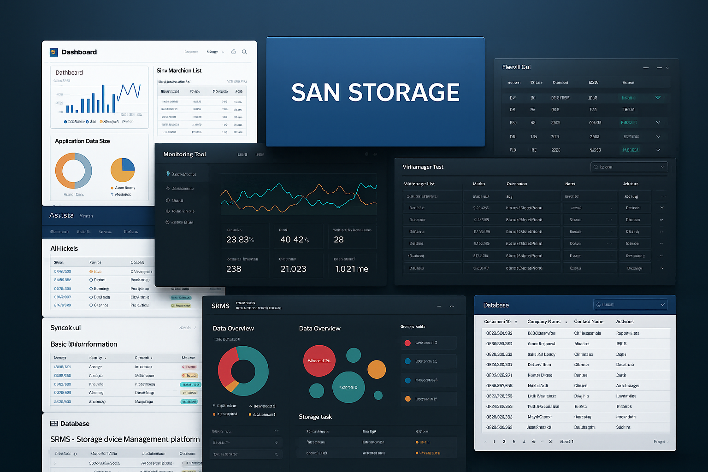
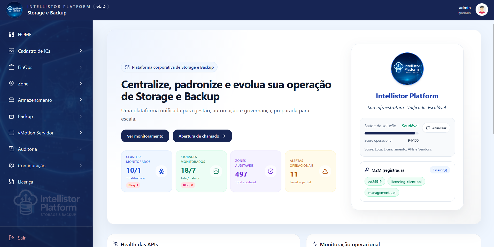
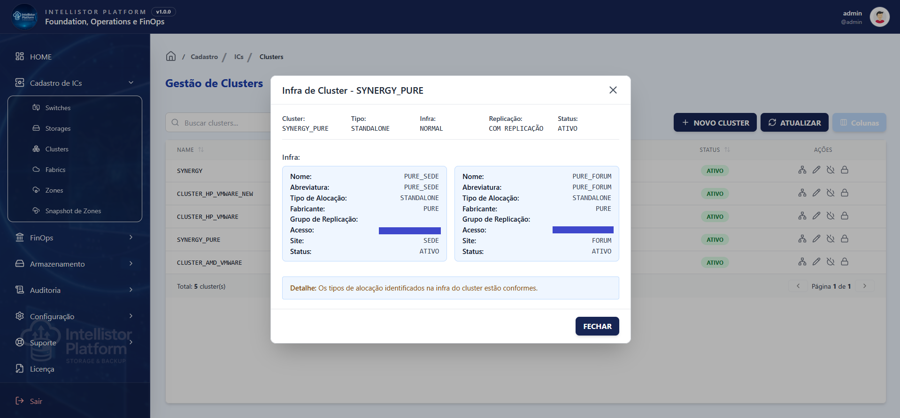
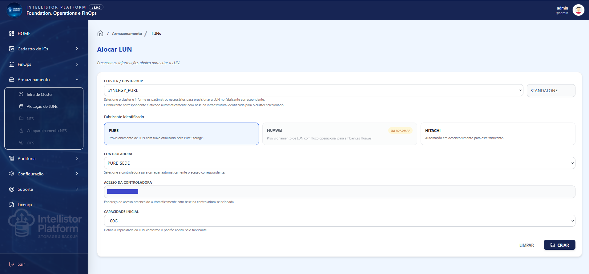

Critical environments cannot rely only on spreadsheets, manual commands and knowledge concentrated in a few people.
Maintaining governance, standardization and efficiency has become a critical challenge in environments that combine multiple vendors, consoles, APIs, processes and technologies in constant evolution.
Intellistor Platform acts as an intelligent layer to connect automation, operations, inventory, capacity, audit and FinOps into a single view for technical teams and infrastructure leaders.
In multivendor environments, small gaps in standardization, traceability and visibility can become operational risk, higher cost and excessive dependency on specialists.
Provisioning LUNs, Host Groups, Zones and access through manual commands increases the risk of errors, rework and unavailability.
Each vendor has its own console, API, terminology and operational flow, making it harder to build a unified operational view.
Without a clear history of who executed what, what changed and what the result was, audits and troubleshooting become slower.
Without continuous visibility into growth, real usage and trends, expansion decisions are often made too late.
Allocated capacity, physical usage and financial waste remain invisible when technical data does not reach management.
When knowledge is concentrated in a few people, operations lose scale, predictability and resilience.
Intellistor Platform centralizes inventory, automation, provisioning, audit, capacity analysis and financial visibility in a single experience for technical operations and executive management.
The goal is simple: reduce manual effort, standardize processes, accelerate deliveries and provide an intelligence layer over multivendor environments.
NextIntellistor Platform connects storage, SAN, backup, automation, audit and FinOps into a single platform — reducing manual effort, increasing governance and providing technical and financial visibility for critical decisions.
Centralize operations across storages, clusters, hosts, LUNs and host groups, without relying on multiple consoles and isolated vendor-specific flows.
Turn manual tasks into controlled, repeatable and traceable flows, with automation guided by operational best practices.
Connect storage, switches, zones, fabrics and servers into integrated processes, reducing failures between teams, tools and operational steps.
Translate allocated capacity, physical usage and technical consumption into financial visibility by controller, host group, LUN, application or business area.
Identify growth trends, exhaustion risks and optimization opportunities before capacity becomes an operational emergency.
Record events, inputs, outputs, users, permissions and results to build an audit trail and reduce operational blind spots.

A modular architecture for governance, FinOps and operational intelligence.
Core — Inventory, provisioning and automation for multivendor storage.
Backup — Governance and automation for critical backup routines.
FinOps — Cost, physical usage, allocated capacity, chargeback and showback.
Predict — Consumption trends, exhaustion risks and recommendations.
NextIntellistor Platform transforms Storage and Backup routines into operational intelligence: less manual execution, more governance, predictability, traceability and cost visibility.
Automate repetitive routines and free the technical team to focus on architecture, continuous improvement and infrastructure evolution.
Turn technical knowledge into consistent flows, reducing variations, rework and dependency on manual procedures.
Record actions, users, parameters, results and events to build a reliable execution trail and support audit requirements.
Track growth, real usage and trends to anticipate exhaustion risks before they become incidents or emergency purchases.
Connect allocated capacity, physical usage and cost per GB to support chargeback, showback, optimization and investment decisions.
Reduce knowledge concentration, preserve operational standards and increase team resilience in multivendor environments.

Intellistor Platform was designed to operate in heterogeneous environments, focused on API-based integrations, secure automation and modular evolution.
Storage: Pure, Huawei, Hitachi.
SAN: Cisco MDS, Brocade.
Backup: Veritas NetBackup.
Virtualization and data: VMware vCenter, REST APIs, SQL databases and custom integrations.
Integrations can be enabled progressively according to the client's maturity, technical priorities and implementation strategy.
NextFor organizations operating critical infrastructure that need to simplify Storage, SAN and Backup management with intelligent automation, native governance and a clear focus on outcomes.
Organizations that depend on enterprise storage, SAN, backup and high availability to sustain applications, data and business-critical services.
Leaders who need visibility into capacity, risk, cost, efficiency and governance to prioritize investments and justify technical decisions with financial impact.
Teams executing provisioning, integrations, troubleshooting and critical routines, but needing to reduce manual effort, operational errors and dependency on handmade processes.
Operations with Huawei, Hitachi, NetApp, Pure, Cisco, Brocade, Veritas and other technologies that need a single layer of control, automation and traceability.
Companies that want to connect allocated capacity, physical usage, cost per GB, chargeback and showback to turn infrastructure into management information.
Projects that need to reduce manual tasks, improve governance, automate critical flows and create a more scalable operational foundation.
Before automating, it is essential to understand where the bottlenecks, risks, waste and operational improvement opportunities exist in your infrastructure.
Survey of vendors, storages, operational flows, integrations, manual processes and key risk points.
Identification of routines that can be automated, capacity indicators, FinOps opportunities and operational effort reduction.
Definition of a progressive adoption journey for Intellistor Platform, starting with high-impact, low-risk deliveries.

Intellistor Platform adoption can start with a technical assessment, move into priority automations and evolve into FinOps, prediction, backup and complete governance modules.
Technical support to operate, evolve and continuously extract value from Intellistor Platform.
Assisted operations — Platform usage, flow validation and automation evolution.
Specialized support — Support focused on Storage, SAN, Backup and integrations.
Technical documentation — Guides, best practices and standards for the operations team.
The support scope and level are defined according to the contracted plan and the customer's operational needs.
NextTake the next step to transform manual routines into automation, technical data into financial decisions and critical infrastructure into operational advantage.
Request a demo, technical assessment, commercial proposal or support for Intellistor Platform.